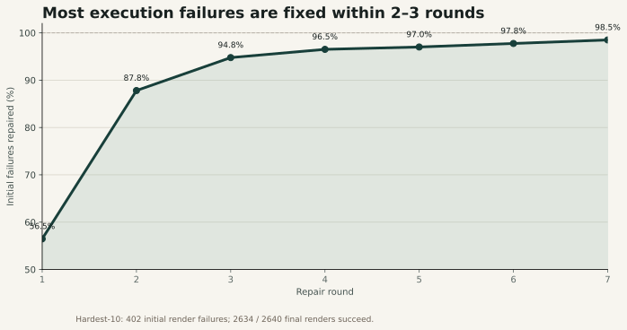
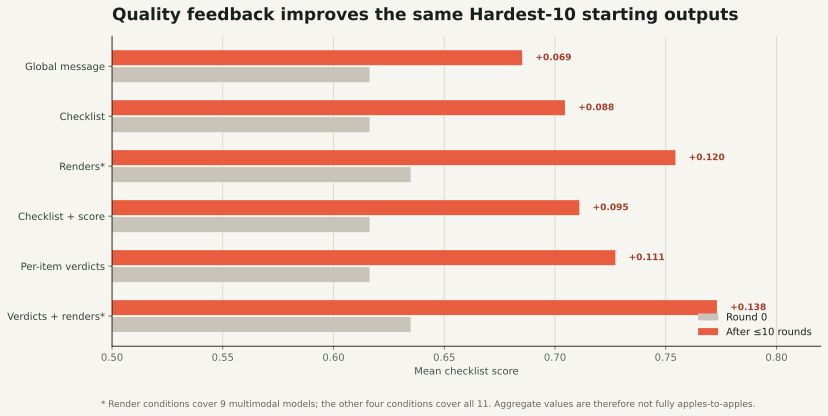

What remains after ten rounds?
Only six cases: repeated use of unsupported Blender APIs in five cases and one persistent timeout. Most gains arrive before round three.
Starting from the same Hardest-10 round-0 outputs, we isolate two stages: repair code that does not execute, then improve code that renders but does not fully satisfy the requested edit.
Each initially failed script receives its Blender error and can be revised for up to ten rounds. The experiment measures render recovery only—not whether the repaired artifact is semantically correct.

Only six cases: repeated use of unsupported Blender APIs in five cases and one persistent timeout. Most gains arrive before round three.
Execution recovery proves that the artifact can be produced. It does not prove the requested geometry, style, or scene relation is correct; quality must be measured separately.
Non-perfect, successfully rendered outputs can iterate for up to ten rounds. Aggregate score still averages all 240 tasks per model and counts render failures as zero.

| Feedback condition | Models | Round 0 | Final | Δ | What the model receives |
|---|---|---|---|---|---|
| Global message | 11 | 0.616 | 0.685 | +0.069 | “Not fully satisfied; improve.” |
| Checklist | 11 | 0.616 | 0.704 | +0.088 | Rubric items, no verdict |
| Renders | 9 | 0.635 | 0.754 | +0.120 | Original + modified six views |
| Checklist + score | 11 | 0.616 | 0.711 | +0.095 | Rubric plus scalar reward |
| Per-item verdicts | 11 | 0.616 | 0.727 | +0.111 | YES / NO for each checklist item |
| Verdicts + renders | 9 | 0.635 | 0.773 | +0.138 | Item verdicts plus visual evidence |
GPT-OSS-120B and Qwen3-Coder-Next did not run in image conditions because the current model endpoints do not support multimodal input. For that reason, 9-model and 11-model aggregate rows are not directly comparable.
Aggregate trends are positive, but individual models use—or misuse—the same signal differently.
Best with verdicts + renders: 0.752 → 0.923 (+0.171), reaching full score on 218 / 240 tasks.
Best with per-item verdicts alone: 0.727 → 0.947 (+0.220). Adding renders did not improve the final mean further.
The major exception: only render-only is roughly neutral (+0.001); every other condition lowers aggregate score, partly through reduced render success.
The quality loop feeds back the benchmark’s own checklist and Sonnet 5 item judgments, then reports progress using that same framework. This creates evaluator leakage and can reward adapting to judge behavior rather than improving artifact quality. The present result is best read as “models can optimize against benchmark feedback,” not yet as an independent estimate of real user-facing improvement.
The strongest follow-up is a crossed design where feedback source and final judge vary independently.
Use a feedback verifier with a different model family and prompt from the held-out final evaluator; record their agreement and disagreement.
Feed requested-change items, but reserve preservation, validity, and side-effect checks for final scoring to detect reward hacking.
Add human or adjudicated labels for a stratified holdout, including regressions where checklist score rises while overall artifact quality falls.